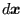
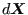
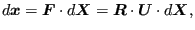
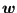
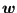
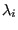
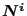
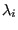
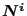
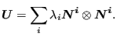

Next: Beam knot Up: Boundary conditions Previous: Kinematic and Distributing Coupling Contents
Knots are used in the expansion of 1d and 2d elements into three dimensions, see Sections 6.2.14 and 6.2.33.
The mathematical description of a knot was inspired by the polar decomposition theorem stating that the deformed state  of an infinitesimal vector  in a continuum can be decomposed into a stretch followed by a rotation [19],[21]:
|  | (169) |
where
 is the deformation gradient,
is the deformation gradient,
 is the rotation tensor and
is the rotation tensor and
 is the right stretch tensor. Applying this to a finite vector extending from the center of gravity of a knot
is the right stretch tensor. Applying this to a finite vector extending from the center of gravity of a knot
 to any expanded node
yields
to any expanded node
yields
| (170) |
where
 and
 are the deformation of the node and the deformation of the center of gravity, respectively. This can be rewritten as
and
 are the deformation of the node and the deformation of the center of gravity, respectively. This can be rewritten as
showing that the deformation of a node belonging to a knot can be decomposed in a translation of the knot's center of gravity followed by a stretch and a rotation of the connecting vector. Although this vector has finite dimensions, its size is usually small compared to the overall element length since it corresponds to the thickness of the shells or beams. In three dimensions
 corresponds to a symmetric 3 x 3 matrix (6 degrees of freedom) and
corresponds to a symmetric 3 x 3 matrix (6 degrees of freedom) and
 to an orthogonal 3 x 3 matrix (3 degrees of freedom) yielding a total of 9 degrees of freedom. Notice that the stretch tensor can be written as a function of its principal values  and principal directions
 as follows:
to an orthogonal 3 x 3 matrix (3 degrees of freedom) yielding a total of 9 degrees of freedom. Notice that the stretch tensor can be written as a function of its principal values  and principal directions
 as follows:
|  | (172) |